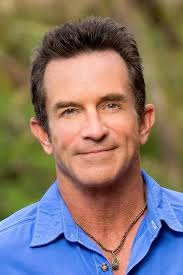

These are some of the winners of Survivor in recent seasons that I have viewed. They are considered to be very strong players and people have a lot of respect for how they played the game. New survivor contestants often look to these men as role models on how to play an effective game of Survivor.
| Name | Season(s) Won | About this player |
|---|---|---|
| Boston Rob | Season 22: Redemption Island | With this being Rob's 4th season of Survivor, he had a lot of experience under his belt. He quickly gained the trust of his tribe and formed an unwaveringly loyal alliance of 6 that lasted to the end of the game. As the one who called all the shots, the jury had no choice but to vote for him because he played harder than anyone else in his alliance. |
| Jon Cochran | Season 26: Caramoan | A Survivor superfan, Cochran knew the ins and outs of the game. Being a Harvard graduate, he used his intelligence and social game to make big moves and to take out big threats. He won unanimously with every jury vote going for him at the final tribal council. |
| Tony Vlachos | Season 28: Cagayan, Season 40: Winners at War | Being one of the two people who have ever won Survivor twice, Tony is a force to be reckoned with. He played a wild strategy that was predictably unpredictable. He would hide in his "spy shack" which allowed him to overhear conversations of other players and know the plans of his enemies. He has always played in an intelligent manner and his success is no surprise for that. |
Click on Jeff Probst's picture if you are interested in learning more! Survivor is currently on its 46th season and shows no sign of stopping! It is amazing to see how the show has changed over time! There really is nothing like it!
